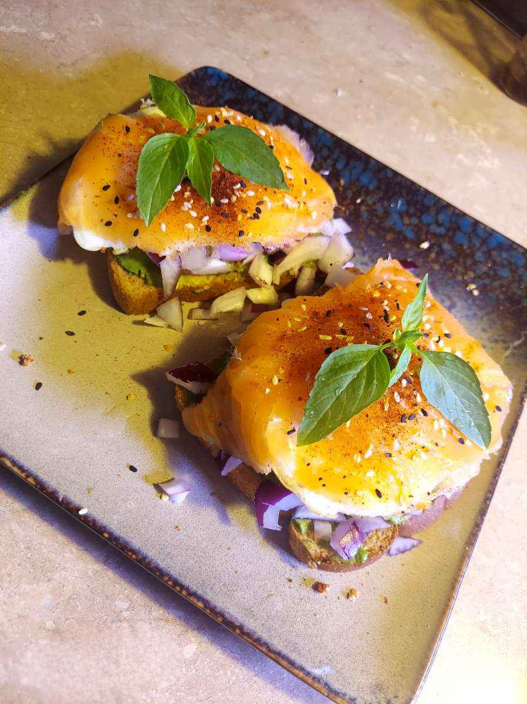

Ingredients
- 1 slices - White Bread (or whatever bread of choice)
- 1 - Egg
- 1 T - Oil
- 1/2 - Avocado
- 1/4 - Medium Red Onion, Diced
- Salt, To Taste
- Black Pepper, To Taste
- Chilli Lime Seasoning, To Taste
- 1/8 cup - Smoked Salmon, Optional
Steps
- Toast the bread
- Fry the egg with the oil to desired doneness while the bread toasts
- Once the toast is done, spread the avocado, and sprinkle on the diced red onion
- Layer the fried egg on top of the avocado spread
- Season the open face sandwhich with the salt, pepper, and chilli lime seasoning
- Top with the smoked salmon and serve